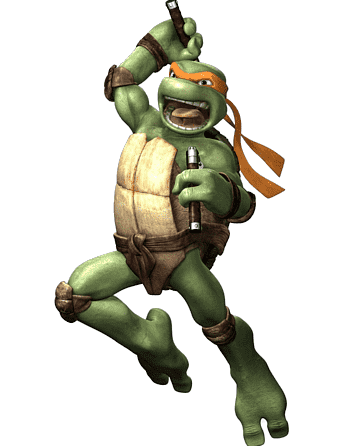

Bem-vindo ao Tartarugas Ninjas - Game
Prepare-se para uma emocionante aventura com suas tartarugas
favoritas! Junte-se a Leonardo, Michelangelo, Donatello e Raphael em
uma jornada incrível que promete levar você a um mundo cheio de ação e
adrenalina.
Neste jogo eletrizante, você encontrará não apenas diversão, mas
também nostalgia. Baseada na dinâmica e na interface dos clássicos
jogos de fliperama que marcaram época, essa experiência traz o melhor
dos dois mundos: a magia da nostalgia e a empolgação da tecnologia
moderna.
Escolha seu herói favorito, mergulhe em cenários desafiadores, lute
contra vilões icônicos e aprimore suas habilidades para se tornar um
verdadeiro mestre das artes marciais. Esteja preparado para reviver
momentos inesquecíveis e criar novas memórias épicas enquanto embarca
nessa incrível jornada com as Tartarugas Ninjas.
Pronto para enfrentar desafios épicos, pizza deliciosa e muita
diversão? O destino do mundo está em suas mãos. Aventure-se agora!
Personagens
Estamos empolgados em apresentar os personagens que farão parte desta
emocionante jornada!
No entanto, como estamos no início do projeto, atualmente temos a
disponibilidade de apenas uma das incríveis Tartarugas Ninjas. Mas não
se preocupe, a diversão está garantida mesmo com apenas um herói!
Leonardo

Líder da equipe, Leonardo é conhecido por sua coragem e habilidades com a espada.
Michelangelo
O membro mais descontraído, Michelangelo adora pizza e é mestre em artes marciais.
Donatello

Donatello é o gênio inventor do grupo, criando dispositivos incríveis para as missões.
Raphael
Raphael é o rebelde, com seu temperamento quente e suas habilidades em combate.
Vilão
E como para todo grande herói existe um vilão, a escolha da vez será o
Leatherhead, um formidável e perigoso adversário que se esconde nas
sombras. Com seu tamanho imponente e força devastadora, Leatherhead é
um desafio à altura das habilidades das Tartarugas Ninjas.
Esse vilão enigmático e astuto é conhecido por sua ferocidade e sua
obsessão em criar caos na cidade. Seu plano maléfico está em pleno
andamento, e somente a coragem e a astúcia de nossos heróis podem
impedi-lo.
Prepare-se para uma batalha épica entre o bem e o mal, à medida que
Leonardo e, em breve, seus companheiros, se unem para enfrentar o
formidável Leatherhead e proteger a cidade. A emoção está prestes a
atingir níveis máximos, e a vitória só pode ser alcançada com a sua
ajuda. Junte-se a nós nesta jornada e faça parte desta incrível
aventura das Tartarugas Ninjas!
Leatherhead
Leatherhead é um mutante crocodilo, que foi utilizado como um rato de laboratório (ou, neste caso, um réptil) pelo Kraang